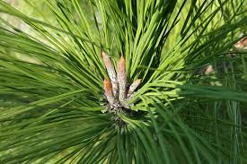

主要产地与香气差异：
共通香气特征：
使用场景：
松木（Pine）
- 主要产于北欧、俄罗斯、加拿大等寒带地区。
- 不同产区的松木香气差异主要体现在树脂感的浓度、清新度和木质调的深浅。
清新的针叶香气，带有明显的树脂感、绿叶调和微微的木质感。整体香气清冽、自然，带有森林的清新气息和微微的辛辣感。
常用于木质调、清新调、森林调香水，赋予作品自然、清新、森林气息。适合秋冬季节的日常香氛、户外香氛、男士香水。也常作为前调或中调，与雪松、柏木、桦木等木质香料搭配，增强层次感和自然感。